Gene Therapy Automation and Process Engineering Start-Up Intern
Eli Lilly
- Assisted in implementation of new manufacturing equipment.
- Developed virtual machines and containers with XCP-ng and Podman.
- GMP compliance, validation, and documentation.

Printing & Prototyping Supervisor
Bechtel Innovation Design Center
- Implemented a filtered air system for metal laser cutting.
- Designed and fabricated a wax casted ring out of nordic gold.
- Assisted in many technical research and engineering fabrication projects.
 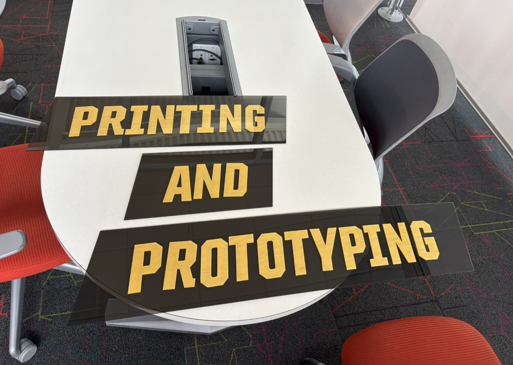
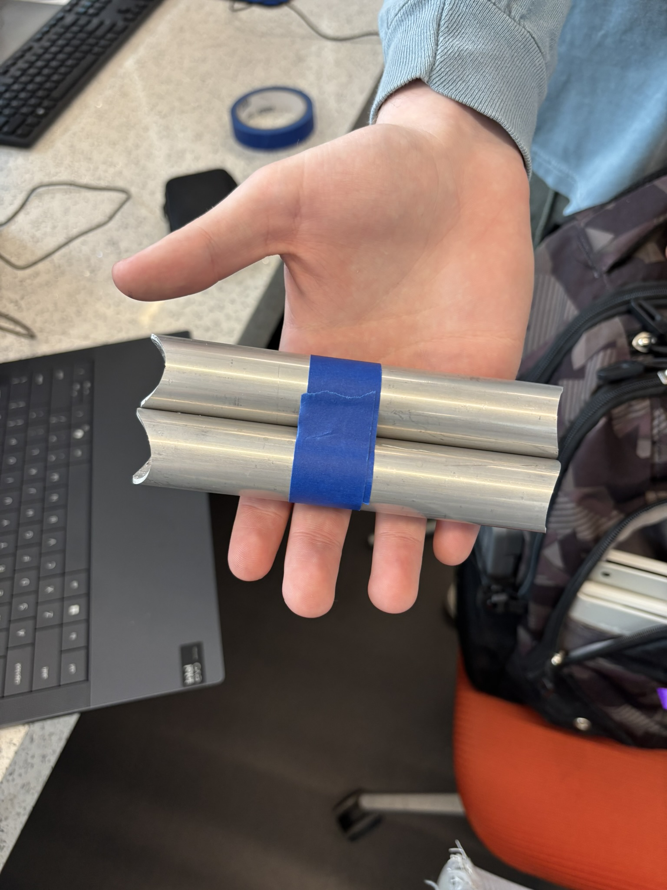
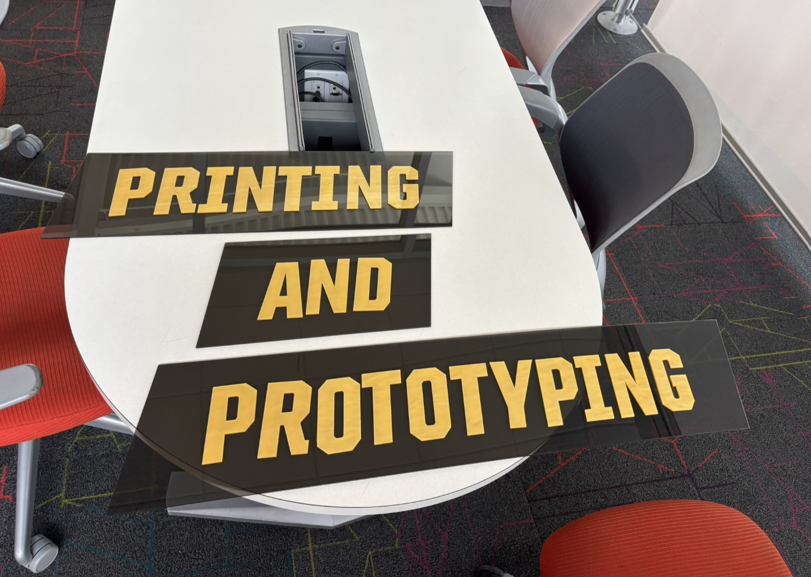
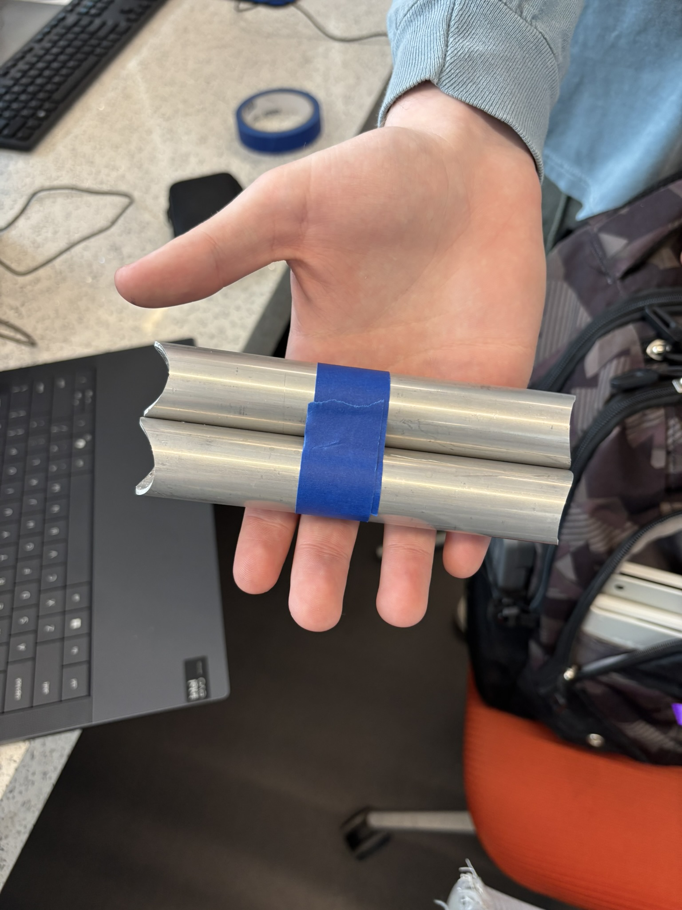
Low Voltage Lead
Purdue Solar Racing
- Designed, fabricated, and tested a start-up PCB and battery cooling PCB.
- Assisted with the design and fabrication of a 36s8p li-ion battery pack.
- Wired and tested systems and communication across the car.
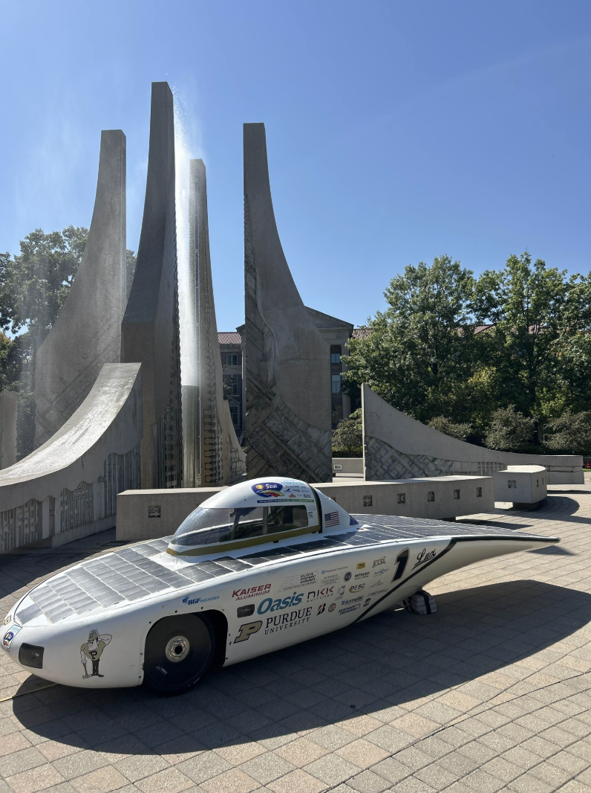
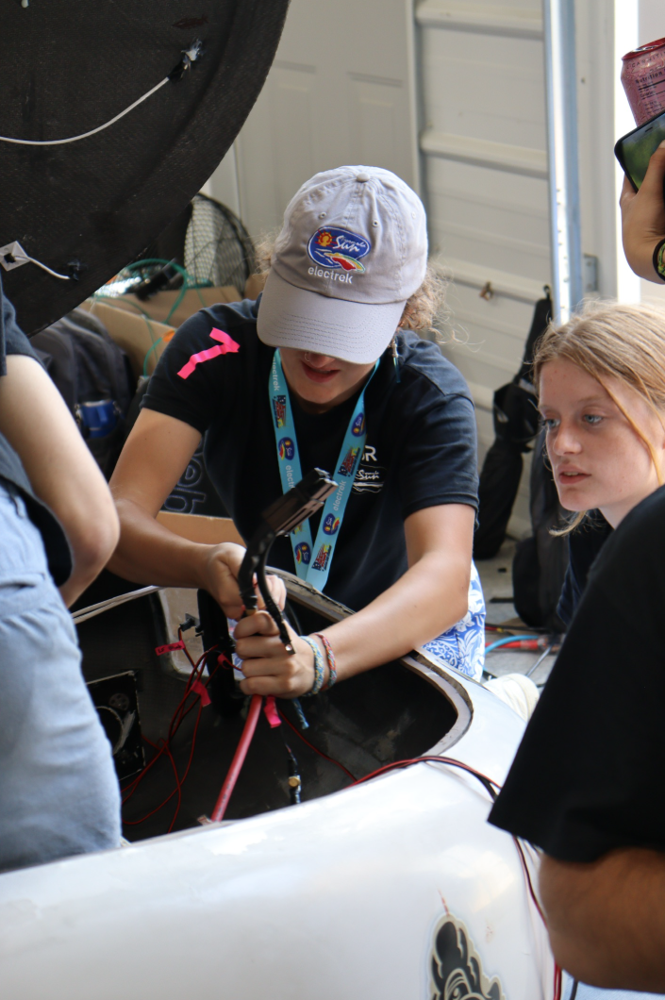

Purdue Engineering Classwork and Labwork
- Completed hands-on electrical engineering projects involving analog circuits, signal generation, and audio filtering.
- Applied simulation, prototyping, and measurement techniques to validate real-world circuit behavior.
- Built a strong foundation in circuit analysis, op-amps, 555 timers, and practical debugging.
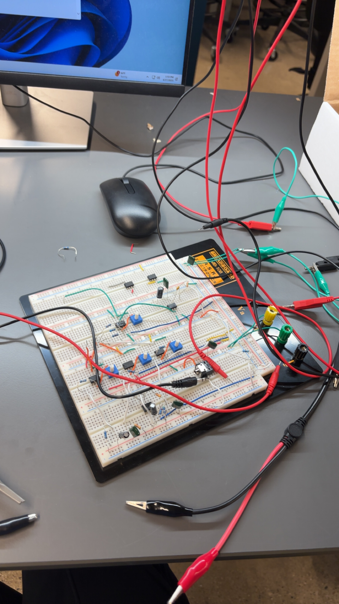
 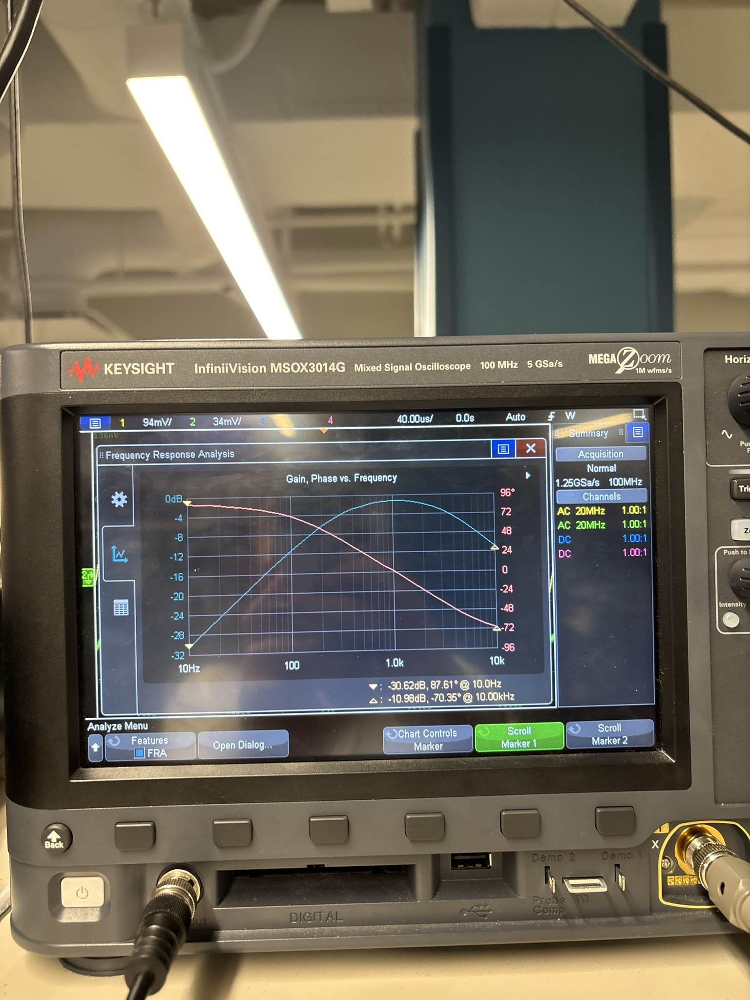
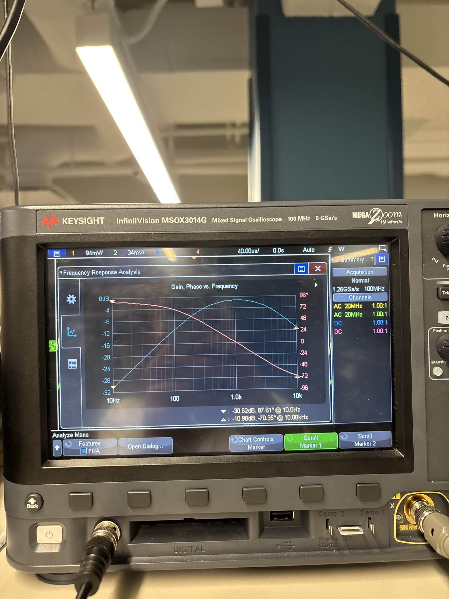
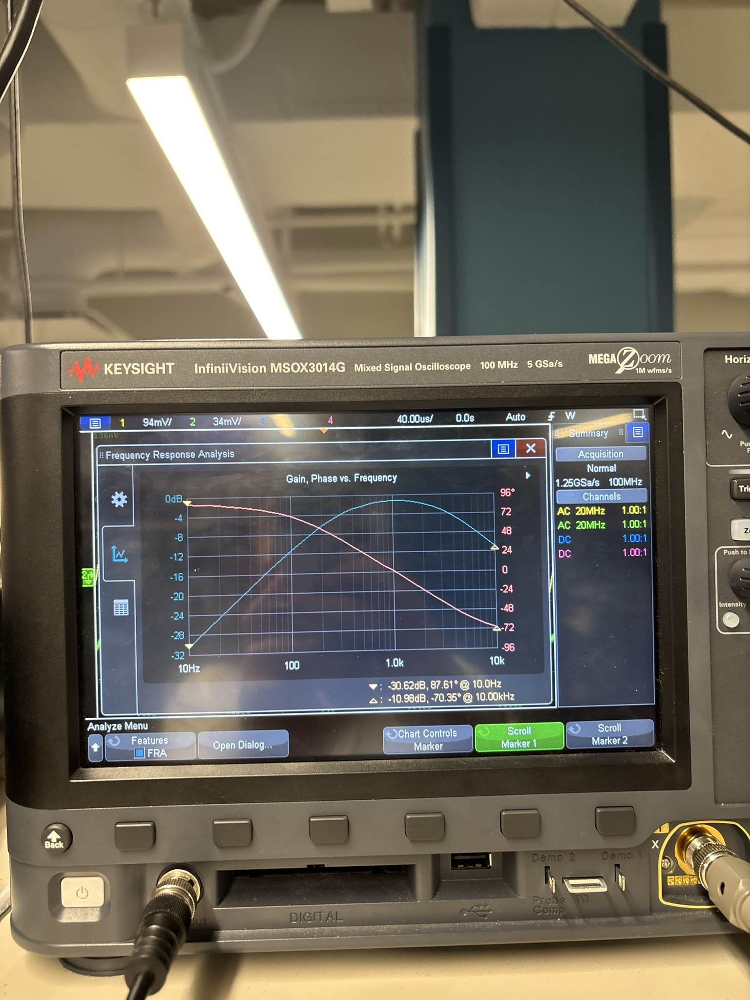
Misc & For Fun Projects
- I designed jigs to cut panels, and then hand sewed my own custom leather soccer ball.
- I love hobby rocketry! I competed in the American Rocketry Challenge in high school and am currently working on earning my L1 certification.
- I'm currently working on creating fully functional miniature Starship robot.
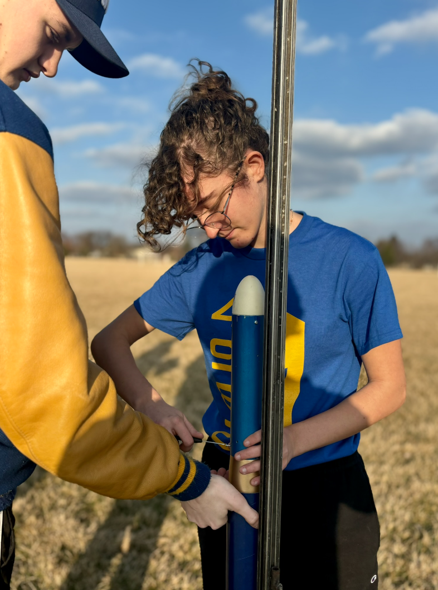


Engineering & Design Lead
FIRST Robotics Competition Team 4982
- Helped design a 150 lbs complex robot to perform various tasks in a competition format.
- Designed custom parts in CAD for ease of manufacturing.
- Worked with a team of 30+ high schoolers to deliver a fully functional product.

 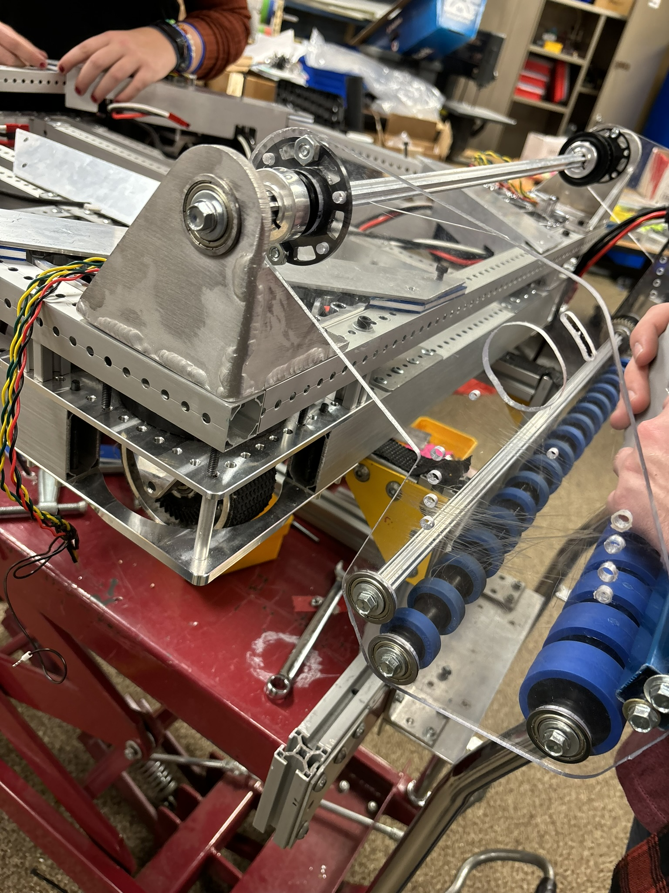
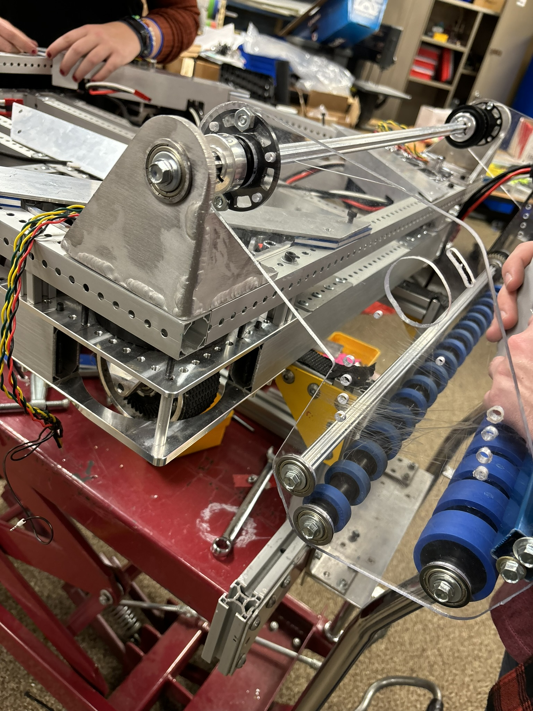